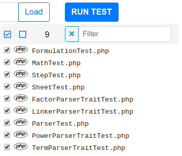
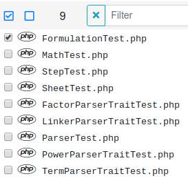
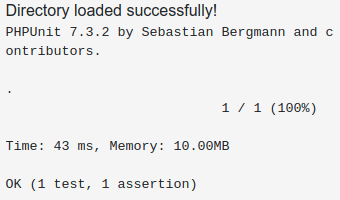
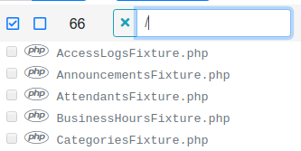
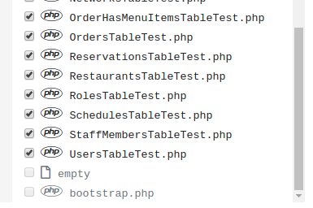
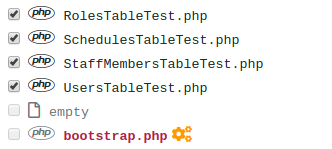

UTUI stands for "unit test user interface".
As of now, it is a simple interace to get PHPUnit outputs in the browser.
Currently, this interface was designed to works with composer PHP projects.
This means,
composer.json file.vendor/autoload.php must be properly configured.phpunit testing framework.
However, if you have your own autoload.php file located in /vendor from your project's root folder
or, you have a bootstrap file located in your test folder and provided that you're also using phpunit,
the interface should still work as it should.
Once you have unzipped UTUI folder, open a terminal, cd into the folder and run the following command:
composer install
When using the phpunit-server,
PHP-CLI is required. Make sure it is installed properly by doing php -v
from the command line. the PHP version should get printed. If not, download and install it.
Permission is the only issue I ran into when developing this interface.
Make sure that PHP has enough permission to create folders and files.
The app will create ONLY one folder called tmp in UTUI root folder and two files:
bootstrap.php and filesList.xml.
If PHP cannot create that folder and these files, the interface will NOT work.
I personally solved this problem by changing the group settings (ownership) of UTUI project folder and all files within.
Since I am on Linux, assuming that phpunit-ui-master is the unzipped folder name, I used the following command:
chown -R :www-data phpunit-ui-master
When I changed the group to www-data the problem was gone.
Naturally, PHP should be in the www-data group.
If you still get permission issues, try deleting the tmp folder.
After downloading UTUI from GitHub, the permissions will be all messed up.
After unzipped the UTUI folder, open a terminal and run the following command on the newly unzipped folder:
sudo chown -R :www-data phpunit-ui-master
and then chmod -R a+rX phpunit-ui-master
and finally, chmod -R g+w phpunit-ui-master
This should give PHP enough permission to create folders.
phpunit.phar
If you are using the phpunit-server with this interface,
you first need to download the PHAR version of phpunit.
Once that is done, rename the downloaded file to phpunit, with no extension.
Then copy-paste it in the root folder of UTUI, next to the index.php file.
phpunit.phar
It is the same procedure if you want to update phpunit.phar.
Just overwrite the existing one with the newer version.
Note:
This interface was implemented using phpunit.phar version 7.3.x.
Click on the icon on the navigation bar to bring up the unit-test interface. Once you're on the uni-test interface, you must select the project on which you want to conduct tests.
To do that, click on to enter the path to your project's root folder.
Once you have entered your project's root folder path and it is correct,
if your PHP test files are located the tests folder,
they will be automatically loaded once you have clicked the button.
If they are not located in the tests folder, you can use the textfield to specify your custom
folder. e.g.
Once your project's root and tests folder are correct, after clicking the button, all your PHP test files, including those located in sub-folders will populate the files list pane.
e.g.

Once the test files are loaded, click on the button to run unit tests.
To test a single file, uncheck all files by clicking the blank square,
without a check mark:
and check only the file you want to test.

Then click on the button.
Results are displayed on the left in the output pane. Notice, these are phpunit console outputs:

To boostrap a file, a file which needs to run before the test begins, it must first be located in your project test folder.
It won't be visible since its not a test file.
To view other files in your project directory, in the filter textfield, type "/"
without the quotes.

The files will be grey-out and you will not be able to check them like a test file. But if the file is a PHP file, you will be able to bootstrap it. e.g.

If you hover the file name with your mouse pointer, a "cogs" icon will appear and you'll be able to click on it.

Once you do that, the bootstrap.php file will now be bootstrapped when you click the to run your test.
web interface: https://github.com/crownlessking/utui
phpunit server: https://github.com/crownlessking/phpunit-server
If you need additional help or information, do not hesitate to contact me at:
dev@crownlessking.com